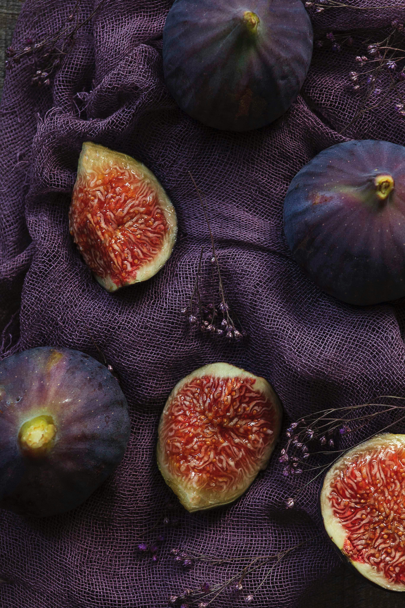
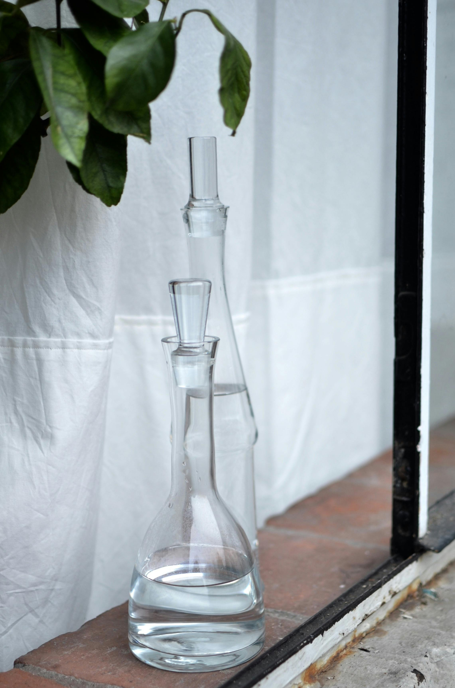
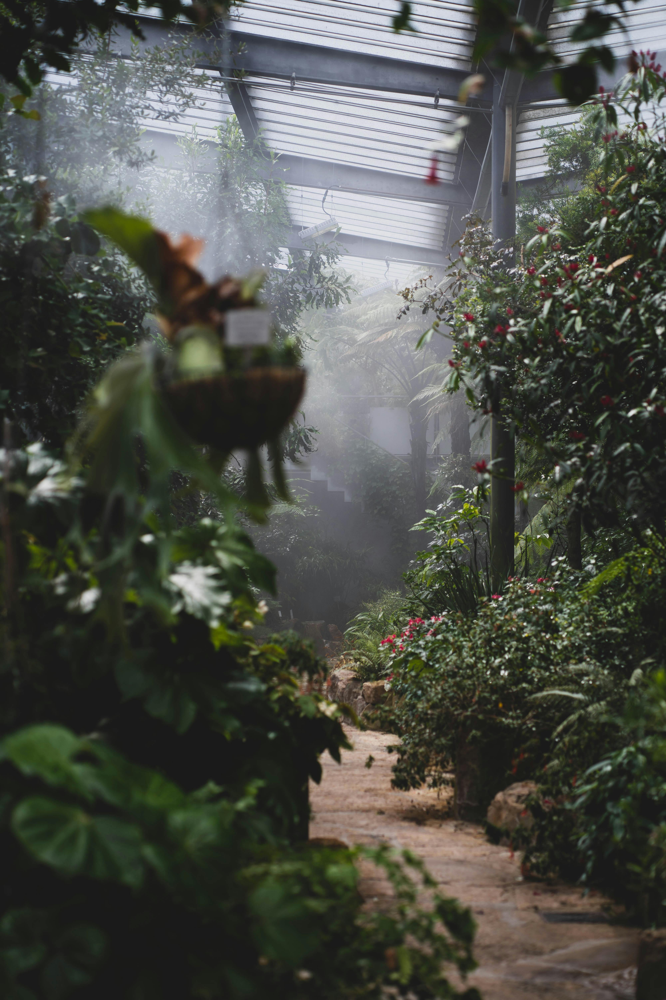

<div class="content-wrapper">

  <section class="section">
    <div class="wardrobe-hero reveal-up">
      <div class="wardrobe-title-wrap">
        <h2 class="wardrobe-title">The Fragrance Wardrobe</h2>
        
      </div>
      <p class="wardrobe-intro">옷을 고르듯 향을 선택하는 순간, 스타일은 더욱 선명해집니다. 일상의 리듬과 분위기에 맞춰 큐레이션한 프래그런스 워드로브를 제안합니다.</p>
    </div>

    <div class="occasion-nav reveal-up">
      <button class="occasion-btn active" data-filter="all">All Moments</button>
      <button class="occasion-btn" data-filter="work">Work & Focus</button>
      <button class="occasion-btn" data-filter="weekend">Weekend Escape</button>
      <button class="occasion-btn" data-filter="evening">Evening Gala</button>
      <button class="occasion-btn" data-filter="rest">Intimate Rest</button>
    </div>
    <div class="wardrobe-grid">
      <article class="style-card reveal-up" data-category="evening">
        <div class="style-video-wrap">
          <video class="style-video" autoplay muted loop playsinline preload="auto">
            <source src="images/orpheon_video.mp4" type="video/mp4">
          </video>
          <button class="wardrobe-play-btn" type="button" aria-label="Pause video">II</button>
        </div>
        <div class="style-meta">
          <span class="style-tag">Evening · Sophisticated</span>
          <h3 class="style-name">Orphéon</h3>
          <p class="style-notes">Juniper Berry · Cedar · Tonka Bean</p>
          <p class="style-desc">60년대 파리의 재즈 바를 연상시키는 향입니다. 담배 연기와 파우더리한 화장품 향, 그리고 오래된 나무 의자의 향기가 섞여 세련되고 몽환적인 밤의 분위기를 자아냅니다.</p>
          <div class="layering-tip">Tip: 칵테일 드레스나 수트 차림에 가장 잘 어울리며, 목덜미에 뿌려 은밀한 매력을 더하세요.</div>
        </div>
      </article>
      <article class="style-card reveal-up" data-category="weekend">
        <div class="style-video-wrap">
          <video class="style-video" autoplay muted loop playsinline preload="auto">
            <source src="images/EauRose_video.mp4" type="video/mp4">
          </video>
          <button class="wardrobe-play-btn" type="button" aria-label="Pause video">II</button>
        </div>
        <div class="style-meta">
          <span class="style-tag">Weekend · Fresh</span>
          <h3 class="style-name">Eau Rose</h3>
          <p class="style-notes">Damascena Rose · Centifolia Rose · Litchi</p>
          <p class="style-desc">장미 정원을 그대로 옮겨온 듯, 꽃잎뿐만 아니라 줄기와 잎사귀의 푸릇함까지 담아냈습니다. 인위적이지 않은 생화 본연의 향기가 기분 좋은 활력을 불어넣습니다.</p>
          <div class="layering-tip">Tip: 헤어 미스트와 함께 사용하여 바람이 불 때마다 은은한 꽃내음을 즐겨보세요.</div>
        </div>
      </article>
      <article class="style-card reveal-up" data-category="work">
        <div class="style-video-wrap">
          <video class="style-video" autoplay muted loop playsinline preload="auto">
            <source src="images/TamDao_video.mp4" type="video/mp4">
          </video>
          <button class="wardrobe-play-btn" type="button" aria-label="Pause video">II</button>
        </div>
        <div class="style-meta">
          <span class="style-tag">Work · Grounded</span>
          <h3 class="style-name">Tam Dao</h3>
          <p class="style-notes">Sandalwood · Cedar · Cypress</p>
          
          <p class="style-desc">인도차이나의 숲에서 영감을 받은 샌달우드의 깊고 크리미한 향입니다. 복잡한 도시의 소음 속에서도 마음을 차분하게 가라앉혀 주어, 흔들림 없는 집중력을 선사합니다.</p>
          <div class="layering-tip">Tip: 중요한 회의 전, 손목 안쪽에 가볍게 터치하여 자신감을 더해보세요.</div>
        </div>
      </article>

      <article class="style-card reveal-up wardrobe-hidden" data-category="rest">
        <div class="style-img-wrap">
          
        </div>
        <div class="style-meta">
          <span class="style-tag">Powdery · Musk</span>
          <h3 class="style-name">Fleur de Peau</h3>
          <p class="style-notes">Musk · Iris · Ambrette</p>
          <p class="style-desc">'피부의 꽃'이라는 이름처럼, 내 살냄새인 듯 자연스럽게 스며드는 머스크 향입니다. 아이리스의 파우더리함이 더해져 솜이불처럼 포근하고 따뜻한 위로를 전합니다.</p>
          <div class="layering-tip">Tip: 샤워 후 잠들기 전, 베개나 잠옷에 살짝 뿌리면 편안한 숙면을 돕습니다.</div>
        </div>
      </article>

      <article class="style-card reveal-up wardrobe-hidden" data-category="weekend">
        <div class="style-img-wrap">
          
        </div>
        <div class="style-meta">
          <span class="style-tag">Green · Fruity</span>
          <h3 class="style-name">Philosykos</h3>
          <p class="style-notes">Fig Leaf · Fig Milk · White Cedar</p>
          <p class="style-desc">그리스 펠리온 산의 무화과 나무 밭을 거니는 듯한 향입니다. 나뭇잎의 풋풋함과 열매의 달콤함, 그리고 태양을 머금은 흙내음이 어우러져 주말 오후의 나른한 행복을 떠올리게 합니다.</p>
          <div class="layering-tip">Tip: 린넨 셔츠나 가벼운 옷차림에 매치하면 자연스러운 매력이 배가됩니다.</div>
        </div>
      </article>

      <article class="style-card reveal-up wardrobe-hidden" data-category="evening">
        <div class="style-img-wrap">
          
        </div>
        <div class="style-meta">
          <span class="style-tag">Sensual · Tuberose</span>
          <h3 class="style-name">Do Son</h3>
          <p class="style-notes">Tuberose · Orange Blossom · Jasmine</p>
          <p class="style-desc">밤에 더욱 짙어지는 튜베로즈의 관능적인 향기입니다. 바닷바람의 시원함 속에 숨겨진 꽃향기의 스파이시함이 매혹적이고 대담한 인상을 남깁니다.</p>
          <div class="layering-tip">Tip: 특별한 저녁 식사나 데이트 시, 공중에 뿌리고 그 아래를 지나가듯 입어보세요.</div>
        </div>
      </article>

      <article class="style-card reveal-up wardrobe-hidden" data-category="work">
        <div class="style-img-wrap">
          
        </div>
        <div class="style-meta">
          <span class="style-tag">Sharp · Citrus Woody</span>
          <h3 class="style-name">Vetyverio</h3>
          <p class="style-notes">Vetiver · Grapefruit · Rose</p>
          <p class="style-desc">남성적인 베티버와 여성적인 로즈가 절묘하게 교차하며, 신선하면서도 지적인 이미지를 완성합니다. 갓 다림질한 셔츠처럼 산뜻한 긴장감을 주어 업무 모드로의 전환을 돕습니다.</p>
          <div class="layering-tip">Tip: 셔츠 깃이나 소매 끝에 뿌리면 움직일 때마다 은은하게 향이 피어오릅니다.</div>
        </div>
      </article>

      <article class="style-card reveal-up wardrobe-hidden" data-category="rest">
        <div class="style-img-wrap">
          
        </div>
        <div class="style-meta">
          <span class="style-tag">Soft · Woody Musk</span>
          <h3 class="style-name">L'Eau Papier</h3>
          <p class="style-notes">White Musk · Mimosa · Blonde Woods</p>
          <p class="style-desc">종이 위에 잉크가 스며들 듯, 시간이 지날수록 피부에 밀착되어 고유의 향으로 변해갑니다. 갓 지은 밥처럼 고소하고 담백한 화이트 머스크가 마음을 차분하게 해줍니다.</p>
          <div class="layering-tip">Tip: 조용한 독서 시간, 손목에 뿌리고 향을 음미하며 사색에 잠겨보세요.</div>
        </div>
      </article>

      <article class="style-card reveal-up wardrobe-hidden" data-category="evening">
        <div class="style-img-wrap">
          
        </div>
        <div class="style-meta">
          <span class="style-tag">Chypre · Rose</span>
          <h3 class="style-name">Eau Capitale</h3>
          <p class="style-notes">Rose · Bergamot · Patchouli</p>
          <p class="style-desc">파리에 바치는 찬사. 화려한 장미 부케에 핑크 페퍼의 톡 쏘는 엑센트와 패출리의 깊이가 더해져, 클래식하면서도 도시적인 시크함을 완성합니다.</p>
          <div class="layering-tip">Tip: 차가운 계절의 저녁, 코트 깃에 뿌리면 바람이 불 때마다 우아한 잔향이 느껴집니다.</div>
        </div>
      </article>

      <article class="style-card reveal-up wardrobe-hidden" data-category="work">
        <div class="style-img-wrap">
          
        </div>
        <div class="style-meta">
          <span class="style-tag">Fresh · Fougere</span>
          <h3 class="style-name">Eau de Minthé</h3>
          <p class="style-notes">Mint · Geranium · Patchouli</p>
          <p class="style-desc">그리스 신화 속 님프 민테에서 영감을 받은 향으로, 민트의 알싸한 청량함이 정신을 맑게 깨워줍니다. 고전적인 푸제르 향을 현대적으로 재해석하여 깔끔하고 세련된 인상을 남깁니다.</p>
          <div class="layering-tip">Tip: 나른한 오후, 공기를 환기하듯 가볍게 사용하여 활력을 되찾으세요.</div>
        </div>
      </article>

      <article class="style-card reveal-up wardrobe-hidden" data-category="weekend">
        <div class="style-img-wrap">
          
        </div>
        <div class="style-meta">
          <span class="style-tag">Floral · Green</span>
          <h3 class="style-name">L'Ombre dans l'Eau</h3>
          <p class="style-notes">Blackcurrant Leaf · Rose · Petitgrain</p>
          <p class="style-desc">'물 속의 그림자'라는 뜻처럼, 강가에 피어난 장미와 블랙커런트 잎의 싱그러움이 조화를 이룹니다. 비 온 뒤의 정원처럼 촉촉하고 몽환적인 분위기를 자아냅니다.</p>
          <div class="layering-tip">Tip: 야외 산책이나 피크닉을 갈 때 뿌리면 자연의 향취와 완벽하게 어우러집니다.</div>
        </div>
      </article>

      <article class="style-card reveal-up wardrobe-hidden" data-category="rest">
        <div class="style-img-wrap">
          
        </div>
        <div class="style-meta">
          <span class="style-tag">Warm · Amber</span>
          <h3 class="style-name">Benjoin Bohème</h3>
          <p class="style-notes">Benzoin · Sandalwood · Rockrose</p>
          <p class="style-desc">마치 캐시미어 니트를 입은 듯한 따스함. 벤조인과 샌달우드가 자아내는 달콤하면서도 스파이시한 엠버 향이 깊은 안정감을 주어 긴장을 풀어줍니다.</p>
          <div class="layering-tip">Tip: 쌀쌀한 날씨, 따뜻한 차 한 잔과 함께 공간을 채우는 룸 스프레이로 활용해도 좋습니다.</div>
        </div>
      </article>
</div>

    <div class="wardrobe-more-wrap">
      <button type="button" class="wardrobe-more-btn" id="loadMoreWardrobe" aria-label="View more fragrances">
        <svg viewBox="0 0 24 24" stroke-linecap="round" stroke-linejoin="round">
          <polyline points="6 9 12 15 18 9"></polyline>
        </svg>
      </button>
    </div>
     </section>
</div>